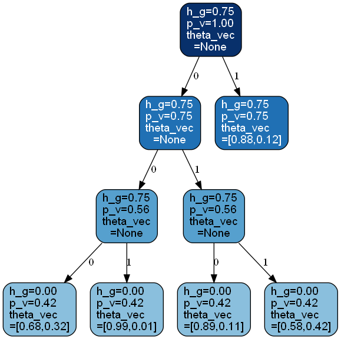
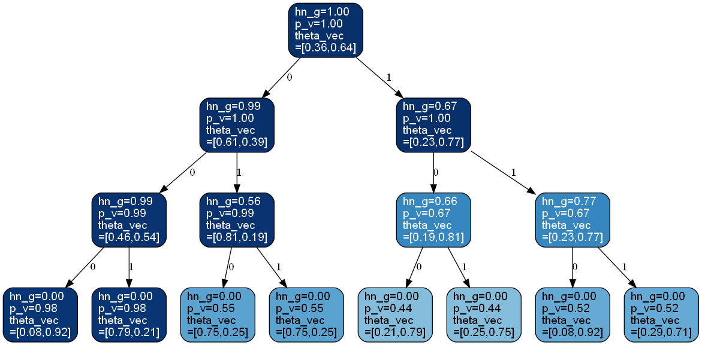

bayesml.contexttree package#
Module contents#
The stochastic data generative model is as follows:
\(\mathcal{X}=\{1,2,\ldots,K\}\) : a space of a source symbol
\(x^n = x_1 x_2 \cdots x_n \in \mathcal{X}^n~(n\in\mathbb{N})\) : an source sequence
\(D_\mathrm{max} \in \mathbb{N}\) : the maximum depth of context tree models
\(T\) : a context tree model, \(K\)-ary regular tree whose depth is smaller than or equal to \(D_\mathrm{max}\), where “regular” means that all inner nodes have \(K\) child nodes
\(\mathcal{T}\) : a set of \(T\)
\(s\) : a node of a context tree model
\(\mathcal{I}(T)\) : a set of inner nodes of \(T\)
\(\mathcal{L}(T)\) : a set of leaf nodes of \(T\)
\(\mathcal{S}(T)\) : a set of all nodes of \(T\), i.e., \(\mathcal{S}(T) = \mathcal{I}(T) \cup \mathcal{L}(T)\)
\(s_T(x^{n-1}) \in \mathcal{L}(T)\) : a leaf node of \(T\) corresponding to \(x^{n-1} = x_1 x_2\cdots x_{n-1}\)
\(\boldsymbol{\theta}_s = (\theta_{1|s}, \theta_{2|s}, \ldots, \theta_{K|s})\) : a parameter on a leaf node, where \(\theta_{k|s}\) denotes the occurrence probability of \(k\in\mathcal{X}\)
The prior distribution is as follows:
\(g_{0,s} \in [0,1]\) : a hyperparameter assigned to \(s \in \mathcal{S}(T)\)
\(\beta_0(k|s) \in\mathbb{R}_{>0}\) : a hyperparameter of the Dirichlet distribution
\(\boldsymbol{\beta}_0(s) = (\beta_0(1|s), \beta_0(2|s), \ldots, \beta_0(K|s)) \in\mathbb{R}^{K}_{>0}\)
\(C(\boldsymbol{\beta}_0(s)) = \frac{\Gamma\left(\sum_{k=1}^{K} \beta_0(k|s)\right)}{\prod_{k=1}^{K} \Gamma\left(\beta_0(k|s)\right)}\)
For \(\boldsymbol{\theta}_s\) on \(s\in\mathcal{L}(T)\), the Dirichlet distribution is assumed as the prior distribution as follows:
For \(T \in \mathcal{T}\),
where \(g_{0,s}=0\) if the depth of \(s\) is \(D_\mathrm{max}\).
The posterior distribution is as follows:
\(g_{n,s} \in [0,1]\) : the updated hyperparameter
\(T_\mathrm{max}\) : a superposed context tree, \(K\)-ary perfect tree whose depth is \(D_\mathrm{max}\)
\(s_\lambda\) : the root node
\(\beta_n(k|s) \in\mathbb{R}_{>0}\) : a hyperparameter of the posterior Dirichlet distribution
\(\boldsymbol{\beta}_n(s) = (\beta_n(1|s), \beta_n(2|s), \ldots, \beta_n(K|s)) \in\mathbb{R}^{K}_{>0}\)
\(I \{ \cdot \}\): the indicator function
For \(\boldsymbol{\theta}_s \in\mathcal{L}(T_\mathrm{max})\),
where the updating rule of the hyperparameter is as follows:
For \(T \in \mathcal{T}\),
where the updating rules of the hyperparameter are as follows:
where \(s_{\mathrm{child}}\) is the child node of \(s\) on the path from \(s_\lambda\) to \(s_{T_\mathrm{max}}(x^n)\) and
Here,
The predictive distribution is as follows:
\(\boldsymbol{\theta}_\mathrm{p} = (\theta_{\mathrm{p},1}, \theta_{\mathrm{p},2}, \ldots, \theta_{\mathrm{p},K})\) : a parameter of the predictive distribution, where \(\theta_{\mathrm{p},k}\) denotes the occurrence probability of \(k\in\mathcal{X}\).
where the updating rule of the parameters of the pridictive distribution is as follows.
References
Matsushima, T.; and Hirasawa, S. Reducing the space complexity of a Bayes coding algorithm using an expanded context tree, 2009 IEEE International Symposium on Information Theory, 2009, pp. 719-723, https://doi.org/10.1109/ISIT.2009.5205677
Nakahara, Y.; Saito, S.; Kamatsuka, A.; Matsushima, T. Probability Distribution on Full Rooted Trees. Entropy 2022, 24, 328. https://doi.org/10.3390/e24030328
- class bayesml.contexttree.GenModel(c_k, c_d_max=2, root=None, h_g=0.5, h_beta_vec=None, h_root=None, seed=None)#
Bases:
GenerativeThe stochastice data generative model and the prior distribution
- Parameters:
- c_kint
A positive integer
- c_d_maxint, optional
A positive integer, by default 10
- rootcontexttree._Node, optional
A root node of a context tree, by default a tree consists of only one node.
- h_gfloat, optional
A real number in \([0, 1]\), by default 0.5
- h_beta_vecnumpy.ndarray, optional
A vector of positive real numbers, by default [1/2, 1/2, … , 1/2]. If a single real number is input, it will be broadcasted.
- h_rootcontexttree._Node, optional
A root node of a superposed tree for hyperparameters by default
None- seed{None, int}, optional
A seed to initialize numpy.random.default_rng(), by default
None
Methods
gen_params([tree_fix])Generate the parameter from the prior distribution.
gen_sample(sample_length[, initial_values])Generate a sample from the stochastic data generative model.
Get constants of GenModel.
Get the hyperparameters of the prior distribution.
Get the parameter of the sthocastic data generative model.
load_h_params(filename)Load the hyperparameters to h_params.
load_params(filename)Load the parameters saved by
save_params.save_h_params(filename)Save the hyperparameters using python
picklemodule.save_params(filename)Save the parameters using python
picklemodule.save_sample(filename, sample_length[, ...])Save the generated sample as NumPy
.npzformat.set_h_params([h_g, h_beta_vec, h_root])Set the hyperparameters of the prior distribution.
set_params([root])Set the parameter of the sthocastic data generative model.
visualize_model([filename, format, ...])Visualize the stochastic data generative model and generated samples.
- get_constants()#
Get constants of GenModel.
- Returns:
- constantsdict of {str: int, numpy.ndarray}
"c_k": the value ofself.c_k"c_d_max": the value ofself.c_d_max
- set_h_params(h_g=None, h_beta_vec=None, h_root=None)#
Set the hyperparameters of the prior distribution.
- Parameters:
- h_gfloat, optional
A real number in \([0, 1]\), by default
None- h_beta_vecnumpy.ndarray, optional
A vector of positive real numbers, by default
None- h_rootcontexttree._Node, optional
A root node of a superposed tree for hyperparameters by default
None
- get_h_params()#
Get the hyperparameters of the prior distribution.
- Returns:
- h_paramsdict of {str: float, numpy.ndarray, contexttree._Node}
"h_g": the value ofself.h_g"h_beta_vec": the value ofself.h_beta_vec"h_root": the value ofself.h_root
- gen_params(tree_fix=False)#
Generate the parameter from the prior distribution.
The generated vaule is set at
self.root.- Parameters:
- tree_fixbool
If
True, tree shape will be fixed, by defaultFalse.
- set_params(root=None)#
Set the parameter of the sthocastic data generative model.
- Parameters:
- rootcontexttree._Node, optional
A root node of a contexttree, by default None.
- get_params()#
Get the parameter of the sthocastic data generative model.
- Returns:
- paramsdict of {str:float}
"root": The value ofself.root.
- gen_sample(sample_length, initial_values=None)#
Generate a sample from the stochastic data generative model.
- Parameters:
- sample_lengthint
A positive integer
- initial_valulesnumpy ndarray, optional
1 dimensional int array whose size coincide with
self.c_d_max, by defaultNone. Its elements must be in [0,c_k-1]
- Returns:
- xnumpy ndarray
1 dimensional int array whose size is
sammple_length.
- save_sample(filename, sample_length, initial_values=None)#
Save the generated sample as NumPy
.npzformat.It is saved as a NpzFile with keyword: “x”.
- Parameters:
- filenamestr
The filename to which the sample is saved.
.npzwill be appended if it isn’t there.- sample_lengthint
A positive integer
- initial_valulesnumpy ndarray, optional
1 dimensional int array whose size coincide with
self.c_d_max, by defaultNone. Its elements must be in [0,c_k-1]
See also
- visualize_model(filename=None, format=None, sample_length=10)#
Visualize the stochastic data generative model and generated samples.
- Parameters:
- filenamestr, optional
Filename for saving the figure, by default
None- formatstr, optional
Rendering output format (
"pdf","png", …).- sample_lengthint, optional
A positive integer, by default 10
See also
Examples
>>> from bayesml import contexttree >>> gen_model = contexttree.GenModel(c_k=2,c_d_max=3,h_g=0.75) >>> gen_model.gen_params() >>> gen_model.visualize_model() [1 0 1 0 0 0 1 0 0 0]
- class bayesml.contexttree.LearnModel(c_k, c_d_max=2, h0_g=0.5, h0_beta_vec=None, h0_root=None)#
Bases:
Posterior,PredictiveMixinThe posterior distribution and the predictive distribution.
- Parameters:
- c_kint
A positive integer
- c_d_maxint, optional
A positive integer, by default 10
- h0_gfloat, optional
A real number in \([0, 1]\), by default 0.5
- h0_beta_vecnumpy.ndarray, optional
A vector of positive real numbers, by default [1/2, 1/2, … , 1/2]. If a single real number is input, it will be broadcasted.
- h0_rootcontexttree._Node, optional
A root node of a superposed tree for hyperparameters by default
None
- Attributes:
- hn_gfloat
A real number in \([0, 1]\)
- hn_beta_vecnumpy.ndarray
A vector of positive real numbers.
- hn_rootcontexttree._Node
A root node of a superposed tree for hyperparameters.
Methods
Calculate the parameters of the predictive distribution.
estimate_params([loss, visualize, filename, ...])Estimate the parameter under the given criterion.
Get constants of LearnModel.
Get the hyperparameters of the prior distribution.
Get the hyperparameters of the posterior distribution.
Get the parameters of the predictive distribution.
load_h0_params(filename)Load the hyperparameters to h0_params.
load_hn_params(filename)Load the hyperparameters to hn_params.
make_prediction([loss])Predict a new data point under the given criterion.
overwrite_h0_params()Overwrite the initial values of the hyperparameters of the posterior distribution by the learned values.
pred_and_update(x[, loss])Predict a new data point and update the posterior sequentially.
reset_hn_params()Reset the hyperparameters of the posterior distribution to their initial values.
save_h0_params(filename)Save the hyperparameters using python
picklemodule.save_hn_params(filename)Save the hyperparameters using python
picklemodule.set_h0_params([h0_g, h0_beta_vec, h0_root])Set the hyperparameters of the prior distribution.
set_hn_params([hn_g, hn_beta_vec, hn_root])Set the hyperparameter of the posterior distribution.
Update the hyperparameters using traning data.
visualize_posterior([filename, format, h_params])Visualize the posterior distribution for the parameter.
- get_constants()#
Get constants of LearnModel.
- Returns:
- constantsdict of {str: int, numpy.ndarray}
"c_k": the value ofself.c_k"c_d_max": the value ofself.c_d_max
- set_h0_params(h0_g=None, h0_beta_vec=None, h0_root=None)#
Set the hyperparameters of the prior distribution.
- Parameters:
- h0_gfloat, optional
A real number in \([0, 1]\), by default
None- h0_beta_vecnumpy.ndarray, optional
A vector of positive real numbers, by default
None- h0_rootcontexttree._Node, optional
A root node of a superposed tree for hyperparameters by default
None
- get_h0_params()#
Get the hyperparameters of the prior distribution.
- Returns:
- h0_paramsdict of {str: float, numpy.ndarray, contexttre._Node}
"h0_g": the value ofself.h0_g"h0_beta_vec": the value ofself.h0_beta_vec"h0_root": the value ofself.h0_root
- set_hn_params(hn_g=None, hn_beta_vec=None, hn_root=None)#
Set the hyperparameter of the posterior distribution.
- Parameters:
- hn_gfloat, optional
A real number in \([0, 1]\), by default
None- hn_beta_vecnumpy.ndarray, optional
A vector of positive real numbers, by default
None- hn_rootcontexttree._Node, optional
A root node of a superposed tree for hyperparameters by default
None
- get_hn_params()#
Get the hyperparameters of the posterior distribution.
- Returns:
- hn_paramsdict of {str: float, numpy.ndarray, contexttre._Node}
"hn_g": the value ofself.hn_g"hn_beta_vec": the value ofself.hn_beta_vec"hn_root": the value ofself.hn_root
- update_posterior(x)#
Update the hyperparameters using traning data.
- Parameters:
- xnumpy ndarray
1-dimensional int array
- estimate_params(loss='0-1', visualize=True, filename=None, format=None)#
Estimate the parameter under the given criterion.
- Parameters:
- lossstr, optional
Loss function underlying the Bayes risk function, by default
"0-1". This function supports only"0-1".- visualizebool, optional
If
True, the estimated context tree model will be visualized, by defaultTrue. This visualization requiresgraphviz.- filenamestr, optional
Filename for saving the figure, by default
None- formatstr, optional
Rendering output format (
"pdf","png", …).
- Returns:
- map_rootcontexttree._Node
The root node of the estimated context tree model that also contains the estimated parameters in each node.
See also
- visualize_posterior(filename=None, format=None, h_params=False)#
Visualize the posterior distribution for the parameter.
This method requires
graphviz.- Parameters:
- filenamestr, optional
Filename for saving the figure, by default
None- formatstr, optional
Rendering output format (
"pdf","png", …).- h_paramsbool, optional
If
True, hyperparameters at each node will be visualized. ifFalse, estimated parameters at each node will be visulaized.
See also
Examples
>>> from bayesml import contexttree >>> gen_model = contexttree.GenModel(c_k=2,c_d_max=3,h_g=0.75) >>> gen_model.gen_params() >>> x = gen_model.gen_sample(500) >>> learn_model = contexttree.LearnModel(c_k=2,c_d_max=3,h0_g=0.75) >>> learn_model.update_posterior(x) >>> learn_model.visualize_posterior()
- get_p_params()#
Get the parameters of the predictive distribution.
- Returns:
- p_paramsdict of {str: numpy.ndarray}
"p_theta_vec": the value ofself.p_theta_vec
- calc_pred_dist(x)#
Calculate the parameters of the predictive distribution.
- Parameters:
- xnumpy ndarray
1-dimensional int array
- make_prediction(loss='KL')#
Predict a new data point under the given criterion.
- Parameters:
- lossstr, optional
Loss function underlying the Bayes risk function, by default “KL”. This function supports “KL” and “0-1”.
- Returns:
- predicted_value{float, numpy.ndarray}
The predicted value under the given loss function. If the loss function is “KL”, the predictive distribution will be returned as a 1-dimensional numpy.ndarray that consists of occurence probabilities.
- pred_and_update(x, loss='KL')#
Predict a new data point and update the posterior sequentially.
- Parameters:
- xnumpy.ndarray
1-dimensional int array
- lossstr, optional
Loss function underlying the Bayes risk function, by default “KL”. This function supports “KL”, and “0-1”.
- Returns:
- predicted_value{float, numpy.ndarray}
The predicted value under the given loss function.